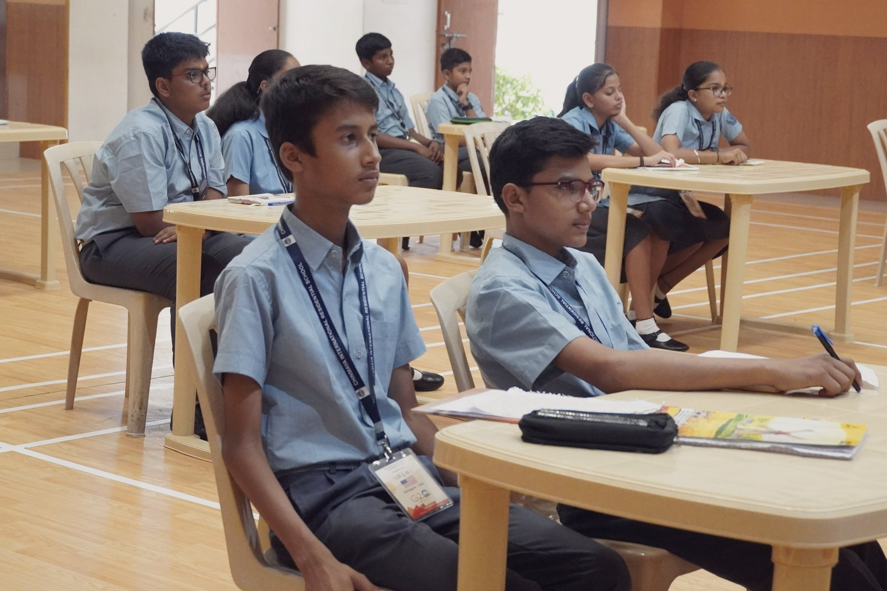
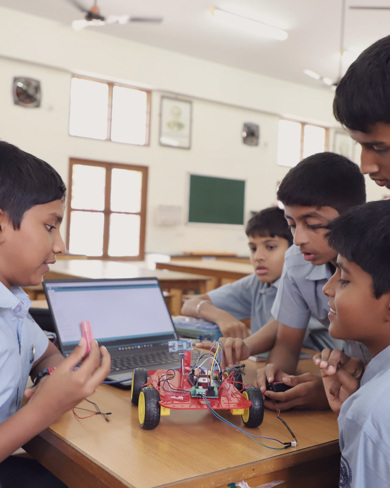

Stream
Engineering
Physics, Chemistry and Mathematics at the centre — the course for students heading towards engineering, the physical sciences and technology.
Central Board of Secondary Education, New Delhi
A broad foundation, the Board examinations in Grades X and XII, and a choice of Engineering, Medicine or Management in the senior years.
Affiliated in New Delhi
CIRS is affiliated to the Central Board of Secondary Education, New Delhi, and teaches the national curriculum from Grade V to Grade XII, in English throughout. Students sit the Board examinations in Grades X and XII, and choose one of three senior streams in Grade XI.
The CBSE pathway is the school’s longest road: a student can join in Grade V and leave after Grade XII having never changed schools. That continuity is what the pathway is built on — one faculty, one campus and one set of expectations, carried through eight years rather than handed from school to school.
The early years keep a broad foundation: the sciences, mathematics, English, two other Indian languages and, from Grade V, artificial intelligence. Nothing is narrowed until it has to be. In Grade XI the student chooses a stream — Engineering, Medicine or Management — and the last two years are spent in depth.
Alongside all of it runs value education: the Bhagavad Geeta and the CCMT Life — An Aradhana books, taught at every age, and the spiritual classes and aartis that carry the same education into the ordinary day.

The shape of eight years
A broad foundation, a first Board examination, and then a stream chosen and studied in depth.
Grades V–VIII
The years in which the habits are made. Every student studies the same broad course, taught by subject specialists from the first year.
Grades IX–X
The same subjects, carried to the standard of the Class X Board examination — the first external examination a CIRS student sits.
Grades XI–XII
A stream chosen for what comes after school, studied in depth for two years and closed by the Class XII Board examination.
Grades XI and XII
Each stream is built around the subjects its field asks for at university. English is studied in all three.
Stream
Physics, Chemistry and Mathematics at the centre — the course for students heading towards engineering, the physical sciences and technology.
Stream
Physics, Chemistry and Biology at the centre — the course for students heading towards medicine and the life sciences.
Stream
Accountancy, Business Studies and Economics at the centre — the course for students heading towards commerce, economics and management.
[Placeholder — the full subject combinations and electives offered in each stream to be confirmed by the school.]
Board examinations, March–April 2026
The school’s reported results from the most recent Board examinations.
In 2018 CIRS ranked first in the CBSE Board results; in 2022 the Class XII Science stream reported a 92% average, with 19 of 24 students at 90% or above. The full record is on Our Results.
How the work is done
A residential school has the whole day to teach in, and uses it.
A residential campus

A day school ends its teaching at the gate. Here the teachers live on the same hundred acres as the students, study hours are part of the day rather than negotiated at home, and help with a problem is a walk across the campus away.
The rest of the day belongs to the rest of the education: houses, sport on the fields and in the pool, music, theatre and art, clubs, and the school’s service work. For the Board years they are not a distraction but the balance that makes the study sustainable.
Value education runs across every grade here alongside the academic timetable — the Bhagavad Geeta, the CCMT Life — An Aradhana books, and the spiritual classes and aartis of the ordinary day.
Why choose it
From Grade V to Grade XII on the same campus, with the same faculty.
Science, mathematics, three languages and AI before anything is narrowed.
Engineering, Medicine and Management, chosen for what comes after school.
A 99% top score in Management and a 90% Class X average in 2026.
Admission is open for Classes V to IX and XI. Registration, the entrance examination and the dates for the coming year are on the Admissions page; the IB Diploma and the two curricula side by side are on the Curriculum page.
Under construction
This page is still being written. Photographs, names and figures marked in brackets are placeholders awaiting the school, and more will be added here in the weeks ahead. Tell us what is missing.